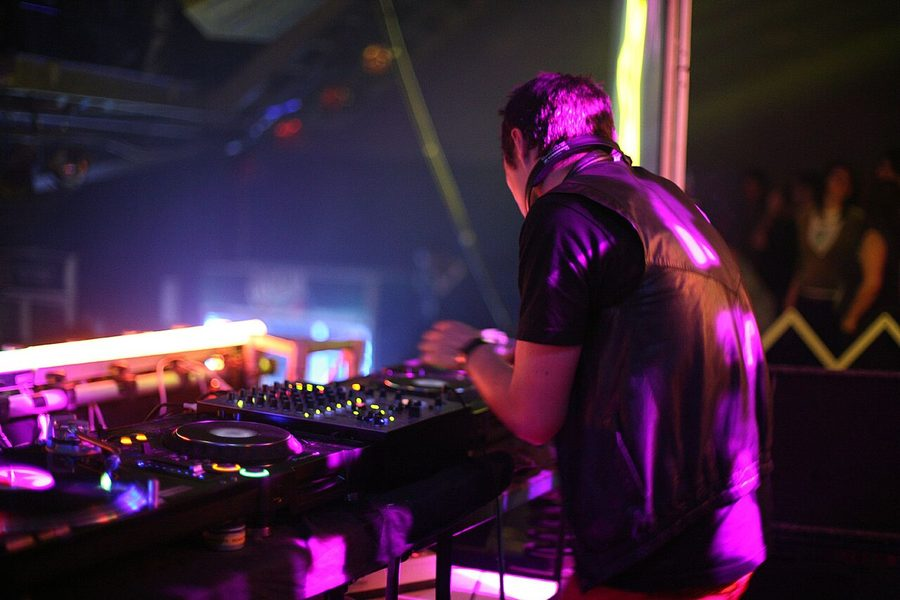

Ajax holds the inthemix50 top spot!



Last year’s winner Ajax has held onto his crown in the 2007 inthemix50 DJ poll, in an overall result that saw talent from around the country highlighted more than ever before. With the industry awards night at Sydney’s Tank Nighclub now done dusted, check out the top 5 winners below…
#1. Ajax
Australia’s leading disco director is standing strong as the reigning king of clubs in 2007. This year we’ve seen him undertake a ridiculously busy touring schedule, both locally and abroad, while he’s also honed his studio craft, working on his own tracks and remixing for the likes of Princess Superstar, the Midnight Juggernauts, Children Collide and The Valentinos.
#2. Dirty South
Debuting at #11 last year, the legion of dedicated Dirty South followers around the country continues to grow in 2007. He’s leaped into the top 5 to make history by taking out the highest position ever attained by a Victorian DJ.
#3. Stafford Bros
Another one for the ITM50 history books, Gold Coast’s finest have made a hop, skip and jump into the #3 position this year. The electro house duo are the first DJing team to make the top 5, and the highest ever rank from Queensland.
#4. TyDi
The young gun of the Australian trance scene, TyDi’s star has continued his rapid ascent in 2007. With music signed to Armin Van Buuren’s internationally renowned Armada label, it’s not hard to see why he’s growing his fanbase as light speed.
#5. John Course
Quite possibly Australia’s hardest working DJ, John Course has maintained his sterling reputation as one of the country’s best for two decades. The longest serving DJ in this year’s top 5, ‘Coursey’ proves once again he’s here to stay.
The anticipation reached boiling point in the leadup to the for the 2007 inthemix50, with the full list of winning DJs revealed at the awards night in Sydney on Wednesday night. The ceremony took place at Tank Nightclub, with the country’s best DJs, producers and promoters gathering together for the year’s biggest industry-focused event, with over 400 power players flying in from around the country.
Playing host for the evening was dance music’s own Billy Crystal – none other than Duncan Fellows. You’ll probably remember the particularly awkward interview he did with Goodwill earlier this year, check it out below! And providing tunes for the evening was DJs Keli Hart and Steve Lind who kept the venue rocking to the early morning.
What definitely stood out the most about this year’s results was that more than ever, the winners were taken from right across the country. Voting in Victoria shot up more than 60 per cent while Queensland rose nearly 70 per cent! Victoria’s Dirty South moved up a massive nine places to #2, making him the highest ranking DJ ever for his state. With the top 5 rounded out with sunshine state favourites the Stafford Brothers, TyDi from Queensland (a dark horse entrant for sure) and John Course from Victoria, it seems like the rest of the country is showing Sydney how it’s done!
Clubbing wise, a number of big players from around the country held onto their top spots with Sublime, Onlove Friction and Family retaining the most popular spots in NSW, VIC, ACT and QLD respectively. In WA the Saturday night slot for Ambar rose up to take the prize, while HQ Saturdays took the number one slot in Adelaide.
On the international front, Dutch DJ Armin van Buuren snatched the top spot from last year’s winner Tiesto, a result that would have had everything to do with his massive ‘White Party’ tour across the country over the June long weekend. While of course he couldn’t be present to collect his award, he delivered a speech via an audio recording where he thanked his Australian fans for all their support, and promised to be back in the country next year.
In terms of the awards for most popular events, Fuzzy and Future cleaned up around the country, with the exception of Perth where the massive Breakfest party took home the gong, and Canberra where the Big Day Out was most popular. This proved once and for all that the festival is ultimately a NSW event, rather than a Sydney one!
Have a look at photos from the event HERE, and check out the winners across all the other national categories below…
Producers
#1. Dirty South
#2.TV Rock
#3. Kid Kenobi
#4. Hook n Sling
#5. Mark Dynamix & Jaytech
Internationals
#1. Armin Van Buuren
#2. Tiesto
#3. Axwell
#4. Armand Van Helden
#5. Carl Cox
Favourite Club Night NSW
#1. Sublime
#2. Kink
#3. Onelove
#4. Laundry @ Chinese Laundry
#5. Sounds on Sunday
Favourite Club Night VIC
#1. Onelove
#2. Famous
#3. Sundays at Revolver
#4. PHD
#5. 3D
Favourite Club Night QLD
#1. Fridays@Family
#2. Saturdays@Family
#3. Saturday Nights @ Platinum
#4. Breaks & Enter
#5. Saturdays @ The MET
Favourite Club Night WA
#1. Japan 4 (Ambar Saturdays)
#2. Frisk @ Bar Open
#3. Destination?
#4. Fridays at Rise
#5. The Nine @ Bar Open
Favourite Club Night SA
#1. HQ Saturdays
#2. Onelove
#3. Karma @ Earth
#4. Anthems
#5. Savvy Sunsets
Favourite Club Night ACT
#1. Friction Fridays @ Academy
#2. Pang @ Lot 33
#3. Love Saturdays @ Academy
#4. Ug Beats @ Toast
#5. Deep Throat @ Toast
Favourite Event NSW
#1. Field Day @ The Domain, Sydney (01/01/07)
#2. Future Music Festival @ Randwick Racecourse, Sydney (17/03/07)
#3. Parklife @ Kippax Lake, Sydney (01/10/06)
#4. Good Vibrations Festival @ Centennial Park, Sydney (17/02/07)
#5. We Love Sounds @ Hordern Complex, Sydney (10/06/07)
Favourite Event VIC
#1. Summadayze @ Sidney Myer Music Bowl, Melbourne (01/01/07)
#2. Future Music Festival @ Sidney Myer Music Bowl, Melbourne (11/03/07)
#3. White Party feat. Armin Van Burren @ Vodaphone Arena, Melbourne (10/06/07)
#4. Parklife (Melbourne) @ Birrarung Marr (23/09/2006)
#5. Good Vibrations Festival @ Sidney Myer Music Bowl, Melbourne (10/02/2007)
Favourite Event QLD
#1. Summafieldayze @ Doug Jennings Park, Gold Coast (06/01/2007)
#2. Parklife @ Southbank Parklands, Brisbane (30/09/06)
#3. Big Day Out @ Gold Coast Parklands (21/01/07)
#4. Future Music Festival @ Doomben Racecourse, Brisbane (10/03/07)
#5. Stafford Brothers @ The Met, Brisbane (01/06/2007)
Favourite Event WA
#1. Breakfest @ Belvoir Amphitheatre, Perth (26/12/06)
#2. Good Vibrations Festival @ Belvoir Amphitheatre, Perth (18/02/07)
#3. White Party feat. Armin van Buuren @ Metro City, Perth (08/06/07)
#4. Summerdayze Housedayze Stage @ Supreme Court Gardens, Perth (07/01/2007)
#5. Parklife, The Deen / The Street / The Shed, Northbridge (02/10/06)
Favourite Event SA
#1. Future Music Festival, Adelaide (12/03/07)
#2. Winter Enchanted @ Le Rox & Enigma, Adelaide (01/07/06)
#3. Anthems
#4. Big Day Out @ Wayville Showgrounds, Adelaide (02/02/07)
#5. Enchanted Forest @ Adelaide Show Grounds (09/12/06)
Favourite Event ACT
#1. Big Day Out @ Homebush, Sydney (25/01/07)
#2. Good Vibrations Festival @ Centennial Park, Sydney (17/02/07)
#3. Splendour in the Grass @ Belongil Fields, Byron Bay (23-24/07/06)
#4. Friction feat. Sneaky Sound System @ ANU, Canberra
#5. Stonefest 2006 @ UC, Canberra (27/10/06)
Top 10 NSW DJs
Ajax
Kid Kenobi
Bang Gang DJs
Mark Dynamix
Archie
The Potbelleez
Goodwill
Amber Savage
Nik Fish
Ben Morris
Top 10 VIC DJs
Dirty South
John Course
Grant Smilie
Adam Bartas
Andy Murphy
Boogs
Steve Strangis
Chardy
TV Rock
Hellraiser
Top 10 QLD DJs
Stafford Bros
TyDi
Baby Gee
Danny T
Raye Antonelli
Vinyl Slingers
Neroli
Habebe
Matt Kitshon
Andrew Lynch
Top 10 WA DJs
Micah
Kenny L
Signal Drivers
Greg Packer
DJ Sketch
Ben Mac
Nyquist Freqs
flex
Adam Kelly
Damian John
Top 10 SA DJs
JosH
Sarez
Brett James
Kontrol
Aikman
Brendon
H Bomb
Mr S
Lou Lou
Top 10 ACT DJs
Mikah Freeman
The Aston Shuffle
Milkbar Nick
XDream
Karton
Ashley Feraude
Tori Mac
Jaytech
Kaos
DJ Hubert
Check below to see the full list of DJs who clocked in for the inthemix50 !
1. Ajax (NSW)
2. Dirty South(VIC)
3. Stafford Bros (QLD)
4. TyDi (QLD)
5. John Course (VIC)
6. Kid Kenobi(NSW)
7. Grant Smilie (VIC)
8. Bang Gang DJs (NSW)
9. Baby Gee (QLD)
10. Adam Bartas (VIC)
11. Mark Dynamix (NSW)
12. Archie (NSW)
13. The Potbelleez (NSW)
14. Goodwill (NSW)
15. Amber Savage (NSW)
16. Andy Murphy (VIC)
17. Boogs (VIC)
18. Nik Fish (NSW)
19. Steve Strangis (VIC)
20. JosH (SA)
21. Chardy (VIC)
22. Micah (WA)
23. TV ROCK [Ivan Gough & Grant Smillie] (VIC)
24. Ben Morris(NSW)
25. Shamus (NSW)
26. Hook n Sling (NSW)
27. Sarez (SA)
28. Ember (NSW)
29. Danny T (QLD)
30. John Glover (NSW)
31. Hellraiser (VIC)
32. Raye Antonelli (QLD)
33. Vinyl Slingers (QLD)
34. Neroli (QLD)
35. Habebe (QLD)
36. Wei-Shen (VIC)
37. Bass Kleph (NSW)
38. Gus Da Hoodrat (NSW)
39. Jewelz (VIC)
40. Acid Jacks(VIC)
41. T-Rek (VIC)
42. Bexta (NSW)
43. Matt Kitshon (QLD)
44. Telefunken(NSW)
45. Chris Kaye(VIC)
46. Jeff Drake (NSW)
47. Andrew Lynch (QLD)
48. Suae (NSW)
49. Derek K (VIC)
50. Dean Paps(VIC)
And if you weren’t lucky enough to be present at the inthemix50 awards ceremony, check out THAT clip featuring the host Duncan Fellows…